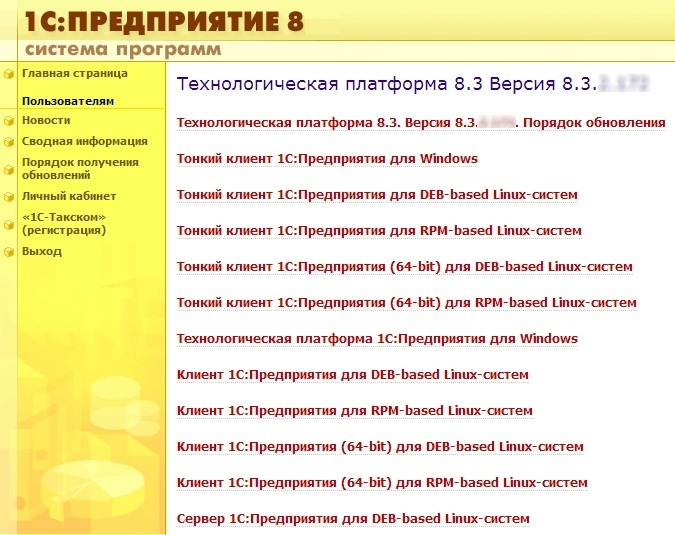
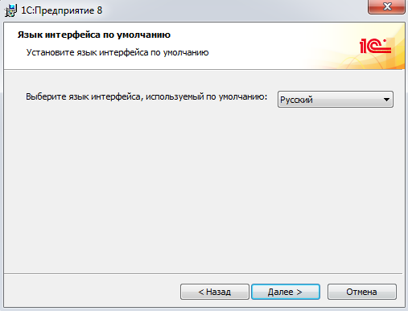

Скачайте дистрибутив последней версии 1С:Предприятия 8.3 с сайта поддержки пользователей 1С по указанному адресу http://users.v8.1c.ru/project.jsp?id=Platform83
Укажите имя пользователя и пароль, зарегистрированные на сайте поддержки пользователей: http://users.v8.1c.ru/
Для скачивания файла перейдите в раздел «Технологическая платформа 1С:Предприятия для Windows»:

Сохраните файл на диск, запомните папку, в которую его сохранили:
Обратите внимание: для установки программы пользователь Windows должен обладать правами администратора! Распакуйте загруженный файл с архивом. В папке, в которую распаковали архив, найдите и запустите файл Setup.exe:

Далее следуйте инструкциям программы – установщика:




Определите и откройте каталог, в котором находится нужная база данных: